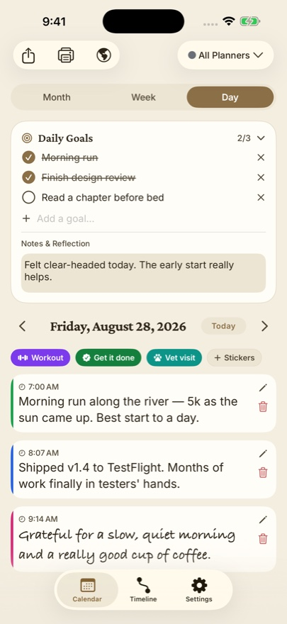

Every January, millions of people buy a beautiful journal. By February, most sit untouched. The problem isn't discipline — it's design. James Clear's Atomic Habits argues that lasting habits come from making the behavior obvious, attractive, easy, and satisfying. Here's how to apply all four to daily journaling.
Make it easy: the two-minute rule
Clear's two-minute rule says a new habit should take less than two minutes. "Journal every day" is intimidating; "write one sentence about today" is trivial. Dayleaf is built for the one-sentence entry — open the app, the calendar is right there, tap today, write a line, done. On Apple Watch it's even shorter: raise your wrist and dictate.

Make it obvious: habit stacking
Attach journaling to a habit you already have: "After I pour my evening tea, I write one line in Dayleaf." Set the daily reminder (Settings → Daily Reminder) to fire at that exact moment, so the cue comes to you.
Make it satisfying: the streak and the filling calendar
"Habit tracking provides visual proof of your progress." — Atomic Habits
Dayleaf's month view is a habit tracker in disguise: every day you write, the cell fills in. A month of entries looks like a full page — and nobody wants to break the chain. Your streak shows on the Apple Watch, right under your goals.
Never miss twice
Clear's rule for bad days: missing once is an accident, missing twice is the start of a new habit. If you skip a day, Dayleaf makes repair easy — tap yesterday's empty cell and backfill it. The photos from that day appear automatically in the editor, so even a forgotten Tuesday comes back to you.
A starter setup (five minutes)
- Create a planner called Journal (or just use the default).
- Add three daily goals: one habit you're building, one for the journal line itself, one easy win.
- Turn on the daily reminder for your stacking moment.
- Write one sentence. That's day one of the chain.